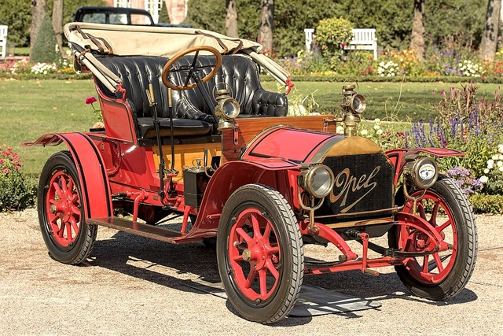

Opel
Az Opel története az 1862-ben alapított Adam Opel AG-vel kezdődik, mely a kerékpárgyártással indult és 1899-ben készítette az első autóját, az Opel Patentmotorwagen „System Lutzmann”-t. Az Opel gyorsan növekedett, és 1902-ben bemutatták az Opel 4/8 PS-t, az első tömeggyártású modellt, ami a vállalat hírnevét megalapozta. Az 1920-as években az Opel már a világ legnagyobb autógyártója volt. Az ikonikus Opel Laubfrosch („Leaf Frog”) 1924-ben debütált, és az Opel rekordokat döntött a kor legmodernebb autógyártási technológiáival. A következő évtizedekben az Opel több sikeres modellt is piacra dobott, például az Opel Kadettet, amely 1936-ban debütált, és az Opel Olympia-t, amely az 1930-as évek közepén került a piacra. Az Opel modelljei és technológiai fejlesztései jelentős hatással voltak az autóiparra és a közlekedésre az elmúlt évszázadokban.
Itt mutatjuk be személyes kedvencünket az Opel kínálatából.
Milán személyes kedvence:
...
Göröcs személyes kedvence:
Opel Monza